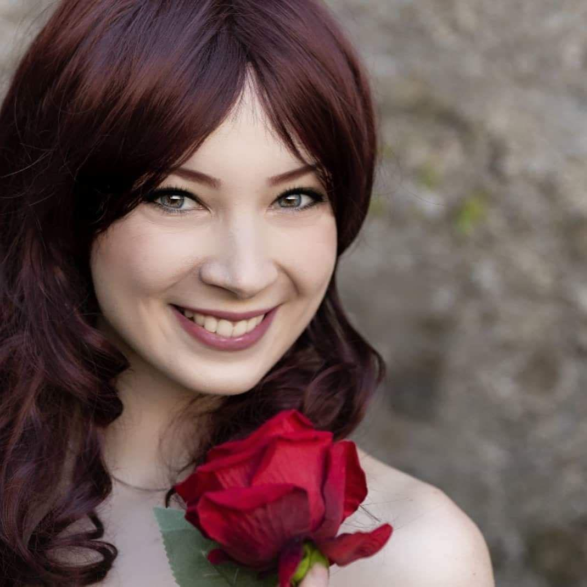

Erya's World

Sono Valeria Turi, classe ‘97, e sono originaria di Bari.
Fin da piccola ho una passione per la Grafica che mi ha permesso di usare
da subito Gimp e Photoshop. Dal 2016 sono diplomata in Grafica.
Ho fatto qualche lavoro per migliorarmi e qualche altro su richiesta.
Per la prima volta mi sono affacciata nel campo del Web Dev. grazie a S2I:
difatti posso dire che questa sia la mia prima creazione in questo campo.
Benvenuti nel mio mondo!
Designed by Valeria Turi.